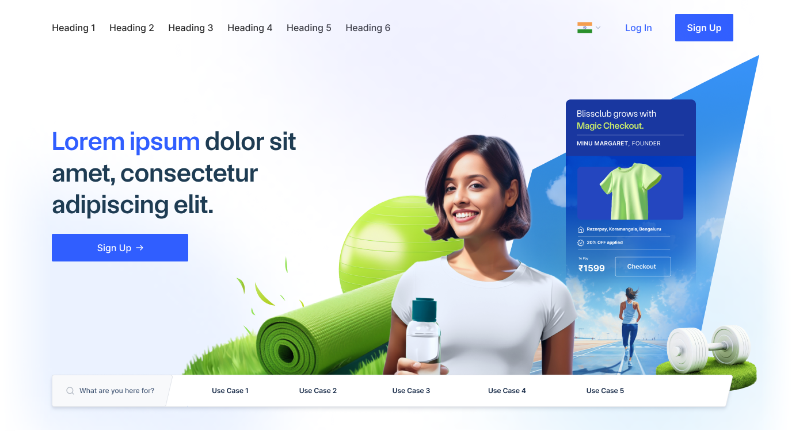

Problem
A major homepage redesign was changing the brand while Razorpay expanded beyond payment gateway products.
Razorpay · UX research
Evaluative study
I proposed and led a study of Razorpay's redesigned homepage to evaluate whether its visual language, content, and interactions communicated the intended brand and helped smaller businesses understand the expanded product portfolio.
My role
Senior UX Researcherproposal, study design, moderation, synthesis, stakeholder alignment
Timeline
6 weeksNovember 2023
Partners
Product, brand, content, and marketingdesigners and product manager
Methods
Pre-mortem, UX audit, impression, perception, usability, and preference tests
At a glance
A major homepage redesign was changing the brand while Razorpay expanded beyond payment gateway products.
Four sequenced tests separated first impression, visual perception, usability, and comparative preference.
The findings pushed the team to address product comprehension, not only polish the visual system.
Project context
Razorpay was known primarily for its payment gateway, but the company had expanded into neobanking, payroll, and lending. The homepage redesign aimed to shift that perception and become more relatable to smaller, less technically experienced businesses.
I proposed a comprehensive evaluation because a change of this scale required evidence about comprehension and usability—not only internal confidence in the design direction.


Research questions
Test the direction without assuming visual preference meant strategic comprehension.
Isolate what the visual language communicated before adding meaningful copy.
Identify usability issues and test specific product-discovery hypotheses.
Methodology
Cross-functional design pre-mortem
Internal UX and prototype audit
Four connected participant exercises
Evidence translated by owner and action
01

02

03
A stripped-down first fold appeared for ten seconds, followed by unaided recall to identify what attracted attention.

A static site with placeholder copy isolated what the visual language communicated about the company, audience, and brand.

Free exploration and guided tasks tested comprehension, product discovery, brand ratings, descriptors, and the SUS.

A comparison with the previous website measured perceived improvement and the reasons behind each participant's preference.

04
What changed
The detailed findings remain under NDA. The central shift was public: I raised questions about whether people understood Razorpay's broader offer and pushed the team to change core content and interaction decisions, not only the look and feel.

Impact
What I learned
The hardest part was closing the loop between evidence and final design under tight deadlines. Involving cross-functional partners in risk framing, observation, and synthesis built confidence in the research and clarified ownership of the changes.